Abstract
Mounted butterflies are among the most striking objects in natural history collections. However, their beauty is notoriously hard to digitize in 3D: they are small and fragile, with microscopic hairs and vein structures. Capturing them in sufficient detail, therefore, requires a macro lens, which has a very limited Depth of Field (DoF). Moreover, a camera body cannot be maneuvered beneath a pinned specimen to photograph its ventral surface. We introduce an end-to-end pipeline that resolves these challenges, turning such specimens into photorealistic 3D models viewable from every direction. It combines three ingredients: handheld focus stacking for all-in-focus macro capture without a tripod, a non-contact first-surface mirror system that exposes the ventral surface without touching the specimen, and a segmentation-free, mirror-aware 3D Gaussian Splatting extension. We validate the reconstructions and design decisions on nine diverse specimens.
Method
Three things make mounted butterflies hard to scan. Macro lenses have a razor-thin depth of field, so no single photo is sharp everywhere. The pin and the case stop you from ever getting a camera underneath. And once you put a mirror in the scene to see that underside, standard 3D Gaussian Splatting gets confused: it happily reconstructs a second, "virtual" butterfly behind the glass.
Our pipeline tackles each of these in turn. Click a stage below to jump to how it works.
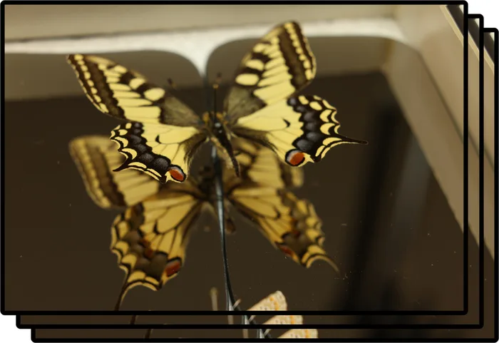
01Handheld focus stack20–40 frames per viewpoint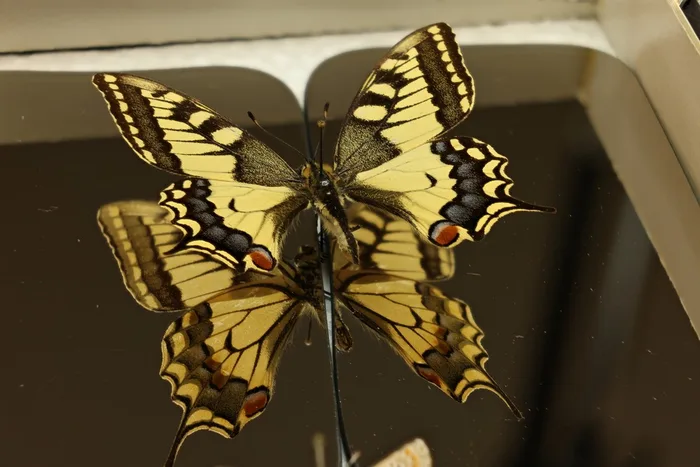
02Align & fuseone all-in-focus image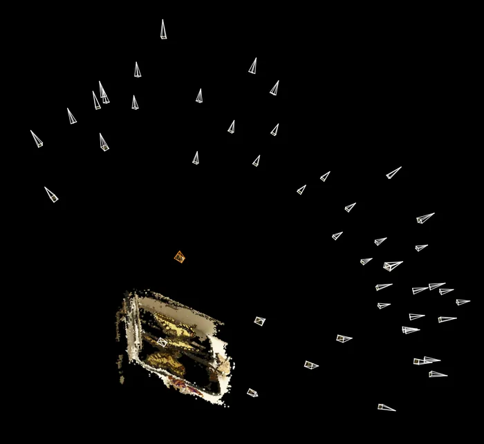
03SfM & MVSposes + dense point cloud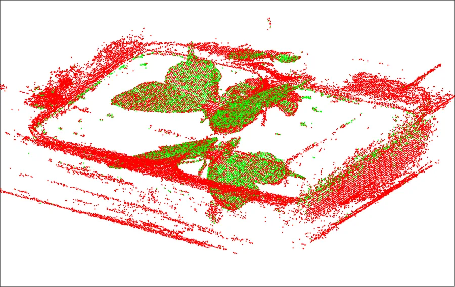
04Find the mirrorvia point-cloud symmetry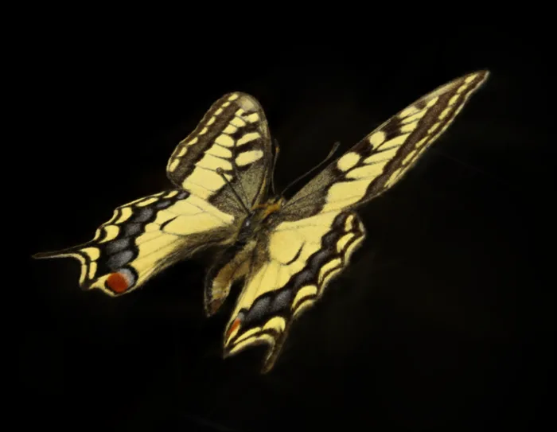
05Mirror-aware splattingone consistent 3D model
2.1Handheld focus stacking
At each viewpoint, we fire a quick burst of 20–40 frames on a Canon EOS R5C with a macro lens, starting focus at the nearest part of the specimen so that each frame catches a different depth slice in focus. No tripod or focus rail is needed, which keeps capture fast.
The catch with going handheld is that your hands move a little between frames. If you fuse the burst as-is, you get ghosting and doubled edges. So we first register every frame to its neighbour with ECC, which estimates a small affine warp by maximising image correlation directly. We then merge the aligned stack with multi-resolution pyramid fusion (Helicon Focus), which takes the fine detail from whichever frame is sharpest at each scale and blends colour smoothly. Drag the slider to see the difference.
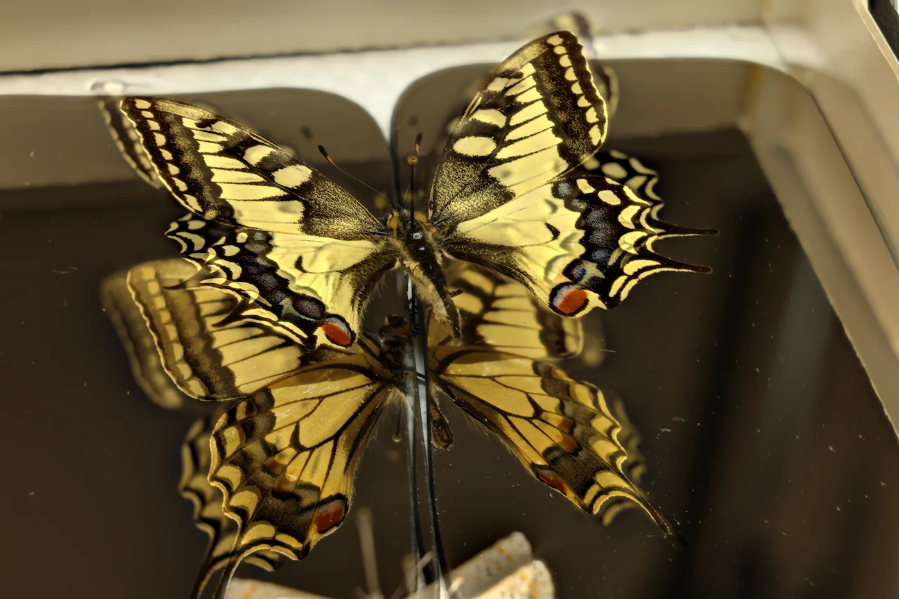
No alignmentWith alignmentHandheld focus stacking. Left: fusing the raw burst gives ghost edges from hand jitter. Right: after ECC registration, the fused image is sharp across the whole wing.
2.2Seeing the underside with mirrors
A pinned butterfly sits a few centimetres above the bottom of its case, and its wings are held only by dried tissue. Removing the specimen from the case to photograph the ventral side risks damaging the specimens. Instead, we slide two small first-surface mirrors underneath, one on each side of the pin. On these the reflective coating sits on the front of the glass, so you avoid the faint double reflection and colour fringing of an ordinary mirror. We use inexpensive dental examination mirrors, which happen to be the right size for 3–10 cm specimens.
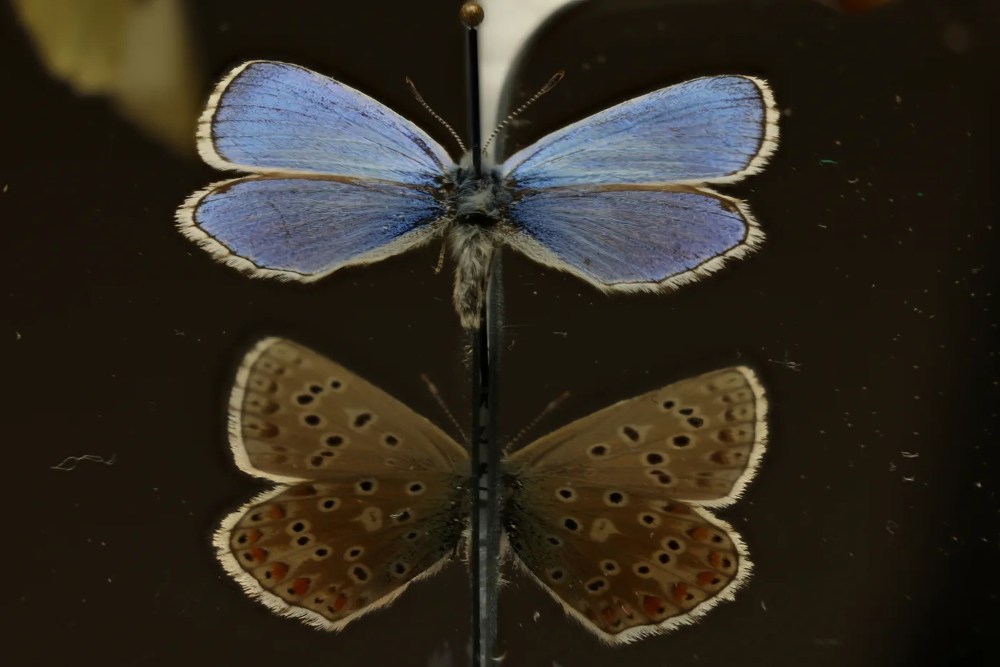
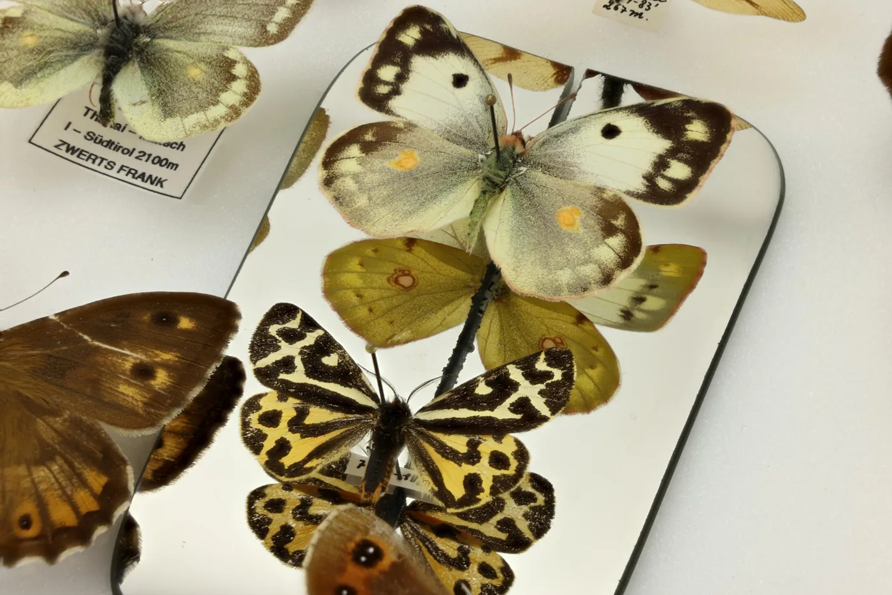
The mirror setup. The camera sees the dorsal side directly and the ventral side only in the reflection, which often looks completely different.
2.3Poses and a dense point cloud
From the fused images, we recover camera poses with HLOC (COLMAP with SuperPoint + SuperGlue). Our viewpoints are fairly sparse, and COLMAP's default SIFT features couldn't reliably match all of them. COLMAP multi-view stereo then gives us a dense point cloud, which we use for two things: initialising the Gaussians and finding the mirror.
2.4Finding the mirror, no segmentation needed
Multi-view stereo doesn't know about the mirror, so it reconstructs the butterfly and its reflection as if both were real. The point cloud therefore contains two mirrored copies of the specimen, and the mirror is their plane of symmetry. Find that symmetry and you've found the mirror, without any masks or depth supervision.
We use the mirror-symmetry-via-registration trick. We flip the cloud across an arbitrary plane, register the flipped copy back onto the original (FPFH + RANSAC, refined with ICP), and combine the two transforms. The result is a reflection whose plane can be read off in closed form. Butterflies are themselves left–right symmetric, though, so the registration sometimes locks onto the butterfly's symmetry plane instead. We therefore repeat the search for a symmetry plane 10 times and keep the most confident candidate that has all cameras on the same side.
Mirror-plane detection. The dense MVS cloud contains the specimen and its mirrored copy. The plane of symmetry between them is the mirror.
2.5Mirror-aware Gaussian Splatting
We build on 2D Gaussian Splatting, using flat surfels that hug surfaces better than 3D blobs. The scene gets two sets of Gaussians: one set for the specimen, and a separate flat set for the mirror surface, which is pinned to the detected plane.
Every training view is rendered in three passes. The mirror pass draws the mirror surface. The reflected pass renders the same specimen Gaussians from the camera mirrored across the plane, which is exactly what you'd see in the glass, and only inside the mirror's footprint. The direct pass draws the specimen from the real camera on top. Since the reflection reuses the same Gaussians, every mirror pixel supervises the specimen's underside. Step through the passes:
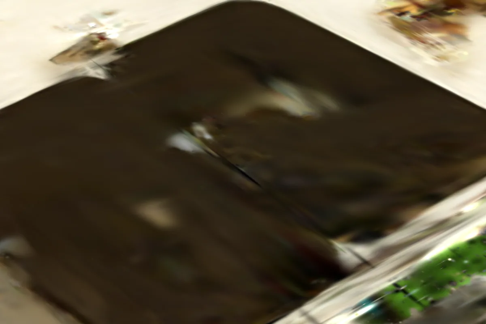
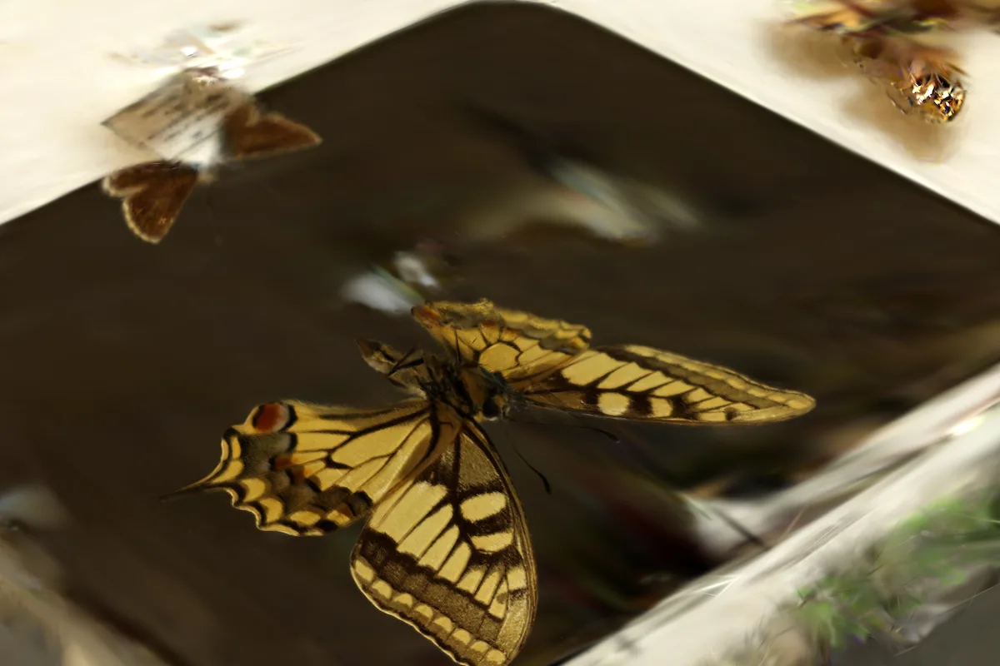
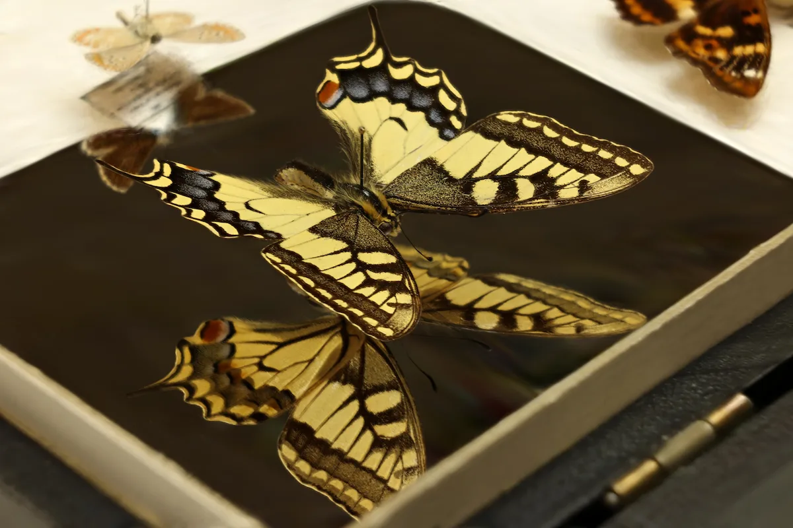
Rendering passes, composited back to front: the mirror Gaussians, then the reflected specimen confined to the mirror, then the direct specimen (the final render).
Why bother modelling the mirror surface at all? Without it, the optimiser has no good way to explain the big, shiny, mostly textureless area around the butterfly, so it scatters low-opacity floaters all over the place, leaving a halo you'd have to clean up by hand. Because the reflection is composited in front of the mirror surface, the mirror Gaussians can only soak up leftover mirror pixels. They can't cheat by painting a copy of the butterfly onto the glass.
Two small regularisers help get a clean cut-out. An alpha-entropy loss pushes each pixel to be fully opaque or fully empty, so the specimen gets a crisp edge instead of a soft haze. 2DGS's depth-distortion loss, applied to the reflected pass where floaters tend to pile up, flattens the wings and clears out the remaining floaters.
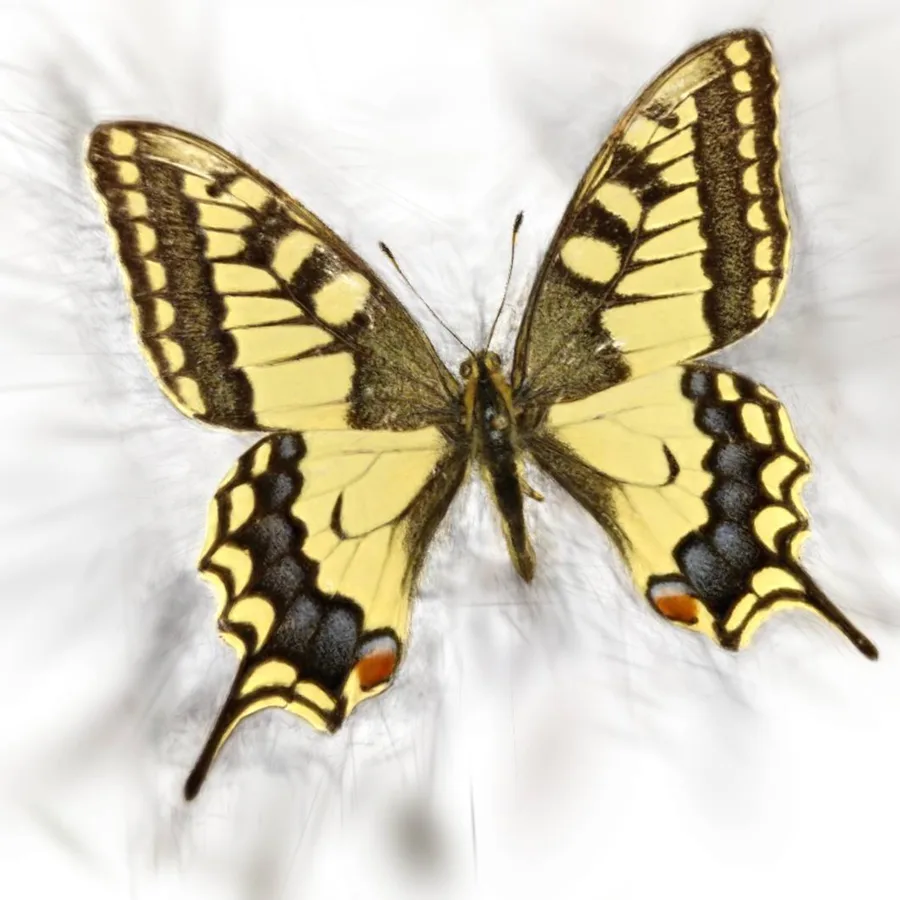
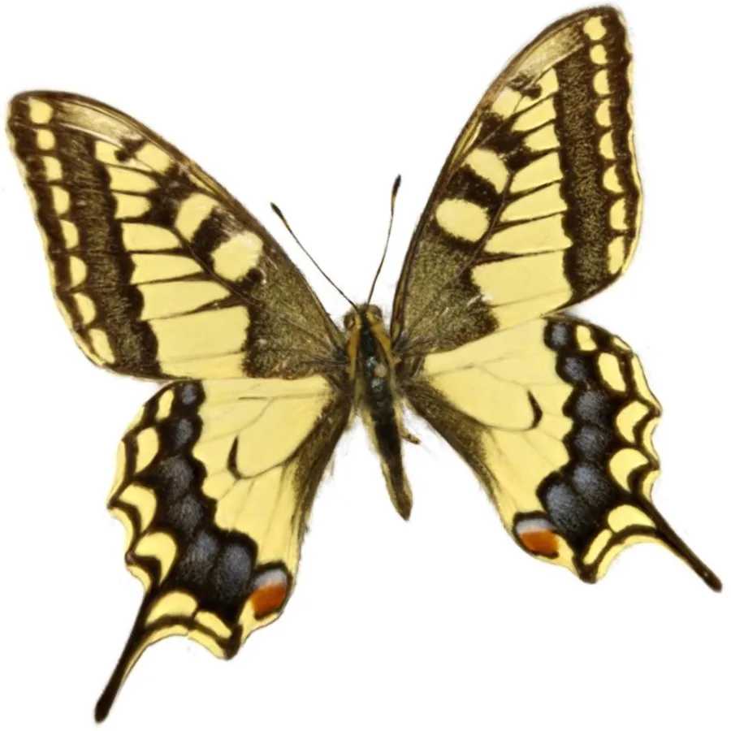
Effect of the regularisers. Switch between the two losses to compare a render with each one off and on.
After training, we throw away the mirror Gaussians and keep only the butterfly. Everything is built on gsplat, and the reflection adds no trainable parameters.
2.6Try it yourself
Here's the end result for an Old World Swallowtail. The reconstruction runs live in your browser, so you can orbit around it and look underneath at the ventral side, which the camera only ever saw in the mirror.
Interactive result. Our full model of a mounted Old World Swallowtail (Papilio machaon), cropped to the specimen with a 3D bounding box. Hosted on SuperSplat.
Results
We tested the pipeline on nine mounted specimens, picked to cover iridescence, size, wing patterns and mounting styles. Each one has 40–90 focus-stacked viewpoints at 8K. Digitising a specimen takes about half an hour of photography plus roughly 1.5 hours of mostly unattended compute on a single RTX 4090. No existing system does the whole job end to end, so we evaluate the two halves separately: handling macro defocus, and mirror-aware reconstruction.
3.1Focus stacking beats DoF-aware splatting
Before adding the mirror, we asked a simpler question: is it better to focus-stack up front, or to train on the raw shallow-DoF frames with a depth-of-field-aware method? We compared against DoF-Gaussian, which learns a lens model with a differentiable circle of confusion. On our data it can't recover the fine scale and vein detail. Focus stacking gains 3.6–4.2 dB PSNR and more than halves the LPIPS error.
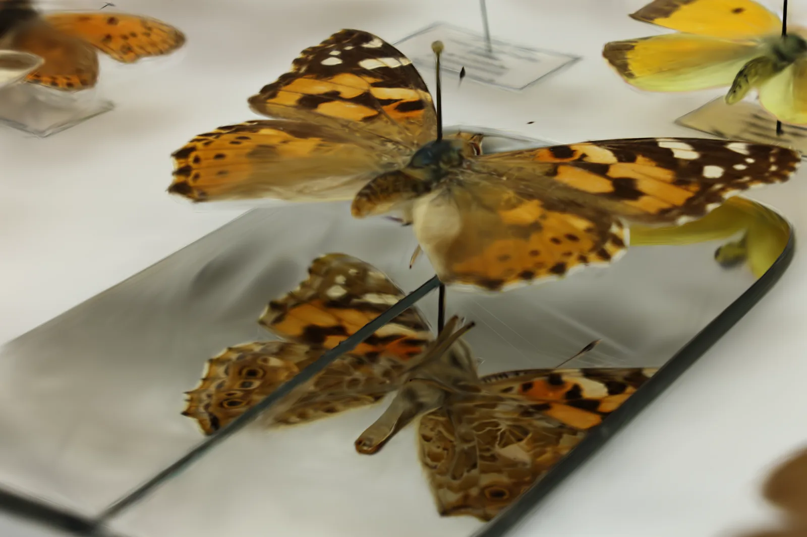
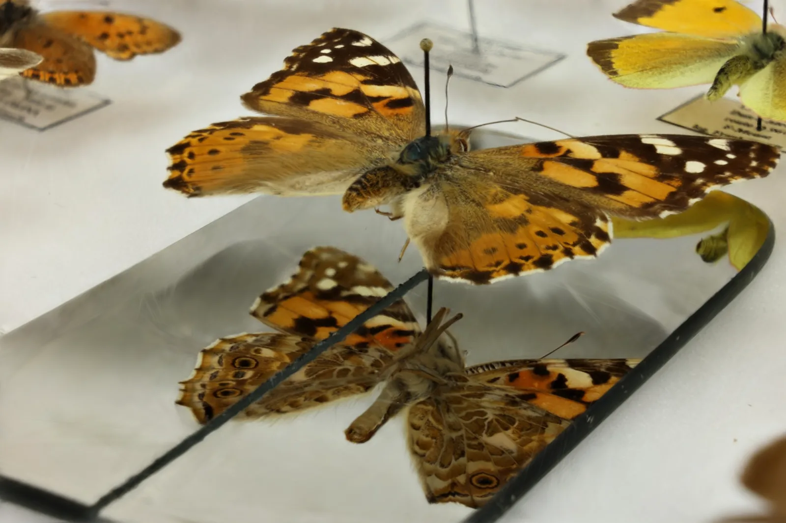
DoF-GaussianOurs (focus stacking)Macro-defocus handling on two held-out views. Drag to compare. Focus stacking keeps the scales, veins and patterns that DoF-Gaussian blurs away.
| Method | PSNR ↑ | SSIM ↑ | LPIPS ↓ |
|---|---|---|---|
| DoF-Gaussian | 26.06 | 0.926 | 0.0885 |
| Focus stacking (3DGS) | 29.71 | 0.947 | 0.0438 |
| Focus stacking (2DGS) | 30.30 | 0.949 | 0.0408 |
3.2Does mirror-awareness cost anything?
A regular 2DGS model can explain each photo as two unrelated objects, the butterfly and a separate "virtual" one behind the glass. Ours has to reconstruct one butterfly whose direct view and reflection agree. Even so, it matches plain 2DGS on every metric (−0.11 dB PSNR) with 2.4× fewer Gaussians, and you get a single specimen you can view from any side.
Two more findings from the ablation below. Adaptive densification hurts on these specimens: the dense MVS cloud already covers them well, so densification mostly adds floaters for the background and the mirror. We turn it off. And dropping the mirror Gaussians costs about 2.9 dB, because the optimiser fills the mirror with floaters instead. Click a column header to sort.
| Model | Reflect | Mirror GS | Densify | Reg. | PSNR ↑ | SSIM ↑ | LPIPS ↓ | #GS (M) ↓ |
|---|---|---|---|---|---|---|---|---|
| 2DGS | – | – | ADC | – | 29.77 | 0.945 | 0.0421 | 1.35 |
| 2DGS | – | – | none | – | 31.16 | 0.947 | 0.0400 | 0.91 |
| Ablation | Camera | ✓ | none | – | 31.12 | 0.950 | 0.0392 | 0.38 |
| Ablation | Camera | ✓ | ADC | – | 27.43 | 0.940 | 0.0566 | 0.98 |
| Ablation | Camera | – | none | – | 28.25 | 0.940 | 0.0522 | 0.42 |
| Ablation | Splats | – | ADC | – | 23.69 | 0.924 | 0.0781 | 1.17 |
| Ablation | Splats | – | none | – | 28.35 | 0.941 | 0.0513 | 0.84 |
| Ours | Camera | ✓ | none | ✓ | 31.05 | 0.949 | 0.0412 | 0.38 |
Mirror-aware reconstruction and ablation. Masked quality on held-out dorsal views, averaged over the eight mirror specimens. Reflect: reflect the camera or the splats. Mirror GS: explicit mirror Gaussians. Densify: adaptive density control or none. Reg.: the two regularisers. The first two rows are mirror-unaware 2DGS baselines.
3.3The underside, seen only in a mirror
This is the real test: the model only ever saw the ventral side as a reflection, so how close does it get to the real thing? To find out, we took specimens out of their cases (exactly the handling our pipeline is meant to avoid), hung them on nylon thread, and photographed the underside directly as held-out ground truth. Two specimens lost their antennae in the process, so we kept this to four.
Our method beats the mirror-unaware baseline on every metric, most clearly on the perceptual ones. The ground-truth photos were taken with a different camera, lens and lighting, so absolute colours differ and PSNR is low across the board. LPIPS and FLIP are more telling here. As a sanity check, the ventral side scores close to the dorsal side measured under the same protocol. Pick a view below.
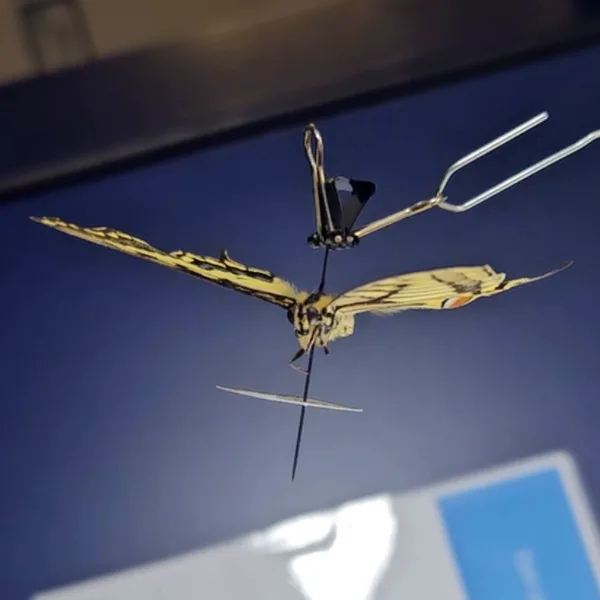
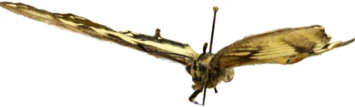
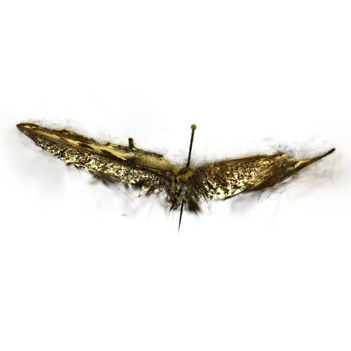
Ventral-surface reconstruction on six held-out photographs of the underside: ground truth, ours, and the mirror-unaware 2DGS baseline.
| Method | PSNR ↑ | SSIM ↑ | LPIPS ↓ | FLIP ↓ |
|---|---|---|---|---|
| Ours (mirror) | 17.27 | 0.861 | 0.184 | 0.121 |
| No mirroring | 14.73 | 0.768 | 0.278 | 0.205 |
| Ours, dorsal (reference) | 18.56 | 0.862 | 0.153 | 0.126 |
Ventral-surface validation. 256×256 object crops with pose-refined cameras. The render is scored unmasked, so floaters count against it. The last row scores the dorsal side under the same protocol as a reference.
Citation
@inproceedings{overdulve2027mountedlepidoptera, title = {Practical High-Fidelity Novel-View Synthesis of Mounted Lepidoptera}, author = {Kristof Overdulve and Lode Jorissen and Nick Michiels}, booktitle = {Proceedings of the IEEE/CVF Winter Conference on Applications of Computer Vision (WACV)}, year = {2027}, eprint = {2606.31679}, archivePrefix = {arXiv}, url = {https://arxiv.org/abs/2606.31679}, }
Acknowledgements
This research was funded by VLAIO under the TETRA program (grant agreement No. HBC.2025.0131). We gratefully acknowledge imec IDLab for computational resources via the iLab.t infrastructure, Pieter Op De Beeck of AlterEyes for providing the use case, and Frank Zwerts for providing the butterfly specimens.
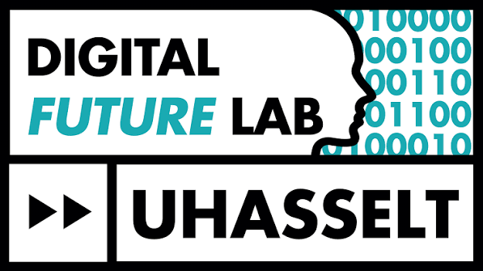
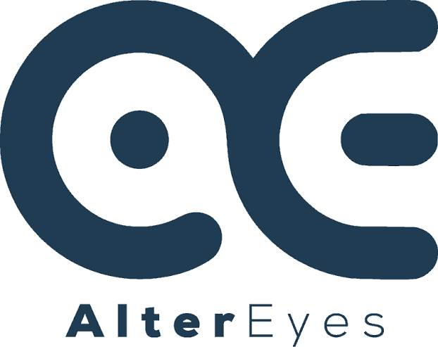